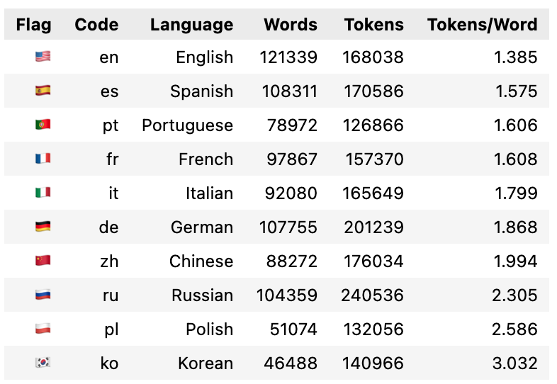

Empirically estimating tokens per word across languages
tokenization
nlp
Author
Christian Wittmann
Published
May 23, 2025
Tokens are the new currency of generative AI. We’re paying for generative AI usage in tokens, sometimes directly via APIs, more often invisibly when using generative AI apps. But how many tokens does a given piece of text actually contain? Can you estimate this intuitively?
Personally, I can’t. Even though estimating the number of words is not trivial either (more on that later), I was looking for a simple rule of thumb on how to convert the number of words into the number of tokens. The simple answer is that English text contains on average 1.3 tokens per word. But how about other languages? German, for example, tends to have longer words than English. I was surprised that I couldn’t find convincing empirical research on this topic, hence I decided to conduct my own.
My approach was straightforward: I tokenized a lot of random Wikipedia articles in various languages and counted their words to determine a real token-per-word ratio. Here is the result, and subsequently, I will explain how I arrived at this result.

Token-per-word ratios across languages
Why measuring tokens per word is important
With the rapidly declining cost per token, one might argue that token count doesn’t really matter anymore. While there’s merit to this viewpoint, I still believe it’s highly valuable to have an intuitive understanding of token counts for several reasons.
First, despite significant increases, context windows remain comparatively finite. Understanding roughly how many tokens a text contains helps you reason about what realistically fits within these limits.
Second, the foundational measurement for text processing is tokens per word, making this ratio essential for intuitive estimation.
Regarding cost, it’s true that for an individual prompt, the token cost is negligible. However, at enterprise scale, token counts can quickly become significant. Particularly when designing AI applications at scale, having reliable ballpark numbers can substantially impact decisions.
Related work
Research in this area is limited. The most relevant papers and posts I found are:
All Languages Are NOT Created (Tokenized) Equal: Similar research question, but the main result is comparative, i.e. how much longer other languages tokenize compared to English. I will use this as reference to verify my results.
How to tokenize
In this blog post, I’ll focus on OpenAI’s tokenizers cl100k_base (for GPT-4) and o200k_base (for GPT-4o):
Tokenizing a given text is actually quite straightforward, simply pip install the tiktoken library, and you’re ready to start tokenizing:
!pip install tiktoken
Code
import tiktokendef get_encoder(encoding_name="o200k_base"):"""Returns a tiktoken encoder. Defaults to GPT-4o's tokenizer."""return tiktoken.get_encoding(encoding_name)def count_tokens(text: str, encoder=None) ->int:""" Counts the number of tokens in the input text using the specified encoder. If no encoder is provided, a new one will be created. """if encoder isNone: encoder = get_encoder()returnlen(encoder.encode(text))
encoder = get_encoder(encoding_name="o200k_base")input_text ="This is a simple test sentence to see how tokenization works."print(f"Example Text: {input_text}")print(f"Tokens: {encoder.encode(input_text)}")print(f"Token Count: {count_tokens(input_text, encoder)}")
Example Text: This is a simple test sentence to see how tokenization works.
Tokens: [2500, 382, 261, 4705, 1746, 21872, 316, 1921, 1495, 6602, 2860, 5882, 13]
Token Count: 13
Reading Wikipedia articles
Next, we’ll need some real text data to tokenize. We’ll use random Wikipedia articles because they’re easily accessible in virtually any language and provide diverse content suitable for generalization. I’m assuming that the token-per-word ratio becomes relatively constant as datasets grow larger, as individual variations even out.
To fetch articles programmatically, we can conveniently use the Wikipedia API, available via the Python package wikipedia:
pip install wikipedia
With this setup, we can easily retrieve and tokenize diverse text samples across different languages.
Code
import wikipediaapiimport requestsfrom urllib.parse import unquotedef get_wikipedia_article(language: str="en", title: str=None) ->tuple[str, str]:""" Fetches the plain text of a Wikipedia article. If `title` is None, a random article is fetched. """ wiki = wikipediaapi.Wikipedia( language=language, user_agent="TokenCountResearch/1.0 (chrwittm@gmail.com)" )if title isNone:# Get a random article by following a redirect url =f"https://{language}.wikipedia.org/wiki/Special:Random" response = requests.get(url, allow_redirects=True) title = response.url.split("/wiki/")[-1] title = unquote(title) # 🔧 decode Unicode page = wiki.page(title)ifnot page.exists():print(f"Article '{title}' not found in language '{language}'.")return title, ""return title, page.text
title, text = get_wikipedia_article(language="en", title="Artificial intelligence")print(text[:500]) # Print preview
Artificial intelligence (AI) refers to the capability of computational systems to perform tasks typically associated with human intelligence, such as learning, reasoning, problem-solving, perception, and decision-making. It is a field of research in computer science that develops and studies methods and software that enable machines to perceive their environment and use learning and intelligence to take actions that maximize their chances of achieving defined goals. Such machines may be called A
For reading a random German Wikipedia article, you can use the following Python code:
title_random_de, text_random_de = get_wikipedia_article(language="de")print(f"Random German article title: {title_random_de}")print(f"Article preview:\n{text_random_de[:500]}")
Random German article title: IC_583
Article preview:
IC 583 ist eine spiralförmige Radiogalaxie vom Hubble-Typ Sbc im Sternbild Löwe an der Ekliptik. Sie ist schätzungsweise 349 Millionen Lichtjahre von der Milchstraße entfernt und hat einen Durchmesser von etwa 145.000 Lichtjahren. Vom Sonnensystem aus entfernt sich die Galaxie mit einer errechneten Radialgeschwindigkeit von näherungsweise 7.900 Kilometern pro Sekunde.
Gemeinsam mit IC 582 bildet sie das Galaxienpaar Holm 155 und mit PGC 1542326 ein gravitativ gebundenes Triplet. Im selben Himmel
Counting words is surprisingly tricky
Counting words seems straightforward at first glance, but it quickly becomes complex once you dig deeper. Initially, my approach was quite naive: splitting text simply based on whitespace. This method works reasonably well for languages using spaces as word separators, such as English or German, although even here, it fails to handle contractions properly (e.g., “can’t,” “don’t,” or “it’s”). For languages with fundamentally different writing systems (Chinese, Japanese, or Korean), this whitespace-based approach completely breaks down because these languages either rarely or never use spaces to separate words. Clearly, a more sophisticated approach was required.
To address this, I turned to spaCy, a robust and multilingual NLP library that intelligently segments text into words by using language-specific models. SpaCy considers linguistic nuances, punctuation, contractions, and special characters, providing accurate and reliable word counting across diverse languages. The spaCy models significantly improve word-count reliability compared to a naive whitespace-based method.
Setup of spaCy
To start using spaCy, you’ll first need to install it:
pip install spacy
Then, you’ll need to download the language-specific models for the languages you’re working with. For example, for English, German, and Chinese, execute:
To automate the installation process, you can run the following cell to check which language models you have already installed. Subsequently, we’ll install missing language packages.
Code
def check_installed_spacy_models():""" For each installed spaCy model (by name), load it and print key metadata: - Model Name - Language code - Model Version - Required spaCy version (if available) - Pipeline components """import spacyfrom spacy.cli.validate import get_installed_models installed_model_names = get_installed_models()ifnot installed_model_names:print("No spaCy models found.")returnelse:print("spaCy models found:\n")print(f"{'Model Name':<20}{'Language':<10}{'Model Ver.':<12}{'spaCy Ver.':<12} Pipeline")print("-"*70)for model_name in installed_model_names:# Attempt to load the model to read its metatry: nlp = spacy.load(model_name) meta =getattr(nlp, "meta", {})# Extract metadata safely lang = meta.get("lang", "n/a") version = meta.get("version", "n/a") spacy_req = meta.get("spacy_version", "n/a") pipeline = meta.get("pipeline", [])print(f"{model_name:<20} "f"{lang:<10} "f"{version:<12} "f"{spacy_req:<12} "f"{','.join(pipeline)}" )exceptExceptionas e:print(f"{model_name:<20} FAILED TO LOAD: {e}")check_installed_spacy_models()
spaCy models found:
Model Name Language Model Ver. spaCy Ver. Pipeline
----------------------------------------------------------------------
fr_core_news_sm fr 3.7.0 >=3.7.0,<3.8.0 tok2vec,morphologizer,parser,attribute_ruler,lemmatizer,ner
es_core_news_sm es 3.7.0 >=3.7.0,<3.8.0 tok2vec,morphologizer,parser,attribute_ruler,lemmatizer,ner
ja_core_news_sm ja 3.7.0 >=3.7.0,<3.8.0 tok2vec,morphologizer,parser,attribute_ruler,ner
pl_core_news_sm pl 3.7.0 >=3.7.0,<3.8.0 tok2vec,morphologizer,parser,lemmatizer,tagger,attribute_ruler,ner
it_core_news_sm it 3.7.0 >=3.7.0,<3.8.0 tok2vec,morphologizer,tagger,parser,lemmatizer,attribute_ruler,ner
ko_core_news_sm ko 3.7.0 >=3.7.0,<3.8.0 tok2vec,tagger,morphologizer,parser,lemmatizer,attribute_ruler,ner
en_core_web_sm en 3.7.1 >=3.7.2,<3.8.0 tok2vec,tagger,parser,attribute_ruler,lemmatizer,ner
ru_core_news_sm ru 3.7.0 >=3.7.0,<3.8.0 tok2vec,morphologizer,parser,attribute_ruler,lemmatizer,ner
de_core_news_sm de 3.7.0 >=3.7.0,<3.8.0 tok2vec,tagger,morphologizer,parser,lemmatizer,attribute_ruler,ner
pt_core_news_sm pt 3.7.0 >=3.7.0,<3.8.0 tok2vec,morphologizer,parser,lemmatizer,attribute_ruler,ner
zh_core_web_sm zh 3.7.0 >=3.7.0,<3.8.0 tok2vec,tagger,parser,attribute_ruler,ner
spaCy models’ names follow two main naming conventions depending on the language and source corpus. For English, models are typically named like en_core_web_sm, where “web” refers to the OntoNotes web-based corpus used for training. For most other languages, models are named like de_core_news_sm, reflecting their training on news-domain texts from Universal Dependencies corpora. While the difference can be confusing at first, it reflects the underlying data sources and training pipelines. To keep things simple and avoid guesswork, we define the full model name explicitly in our language configuration dictionary.
I picked the following languages for this analysis, because they are supported by spaCy, and I found them to be interesting. This means that they are either commonly used or they are otherwise interesting because they use non-Latin scripts.
def install_spacy_models(language_dict):""" Tries to install spaCy language models for all entries in the language_dict. Requires model names to be specified per language. """import subprocessimport sysfor lang_code, data in language_dict.items(): model = data["model"]print(f"Installing spaCy model for {data['name']} ({lang_code}) — {model}")try: subprocess.run([sys.executable, "-m", "spacy", "download", model], check=True)except subprocess.CalledProcessError:print(f"❌ Failed to install spaCy model for {lang_code} ({model})")install_languages =Falseif install_languages: install_spacy_models(LANGUAGES)
Note: If you have installed new languages, be sure to restart your Python kernel.
Counting Words with spaCy
Now, we are almost ready to count words using spaCy’s tokenizer. It’s important to clarify here that the term “token” can be somewhat ambiguous and context-dependent. In natural language processing libraries like spaCy, a “token” typically means a word, punctuation mark, or similar meaningful unit of text. However, when dealing with Large Language Models (LLMs), a “token” usually refers to a subword unit produced by the tokenizer. Therefore, always keep this distinction in mind to avoid confusion as you follow along.
For what we want to do, we need to separate the spaCy tokens into words tokens and other tokens like punctuation, spaces, etc. as illustrated by the following example:
Code
import spacyimport string# Simple cache/dictionary to hold loaded spaCy models:_spacy_models = {}def get_spacy_model(language_code: str="en"):""" Loads and caches the spaCy language model for the given language code. Uses the model name defined in the LANGUAGES dict. Falls back to a blank model if the specified model is not available. """if language_code notin _spacy_models: model_name = LANGUAGES.get(language_code, {}).get("model", None)try:if model_name: _spacy_models[language_code] = spacy.load(model_name)else:raiseValueError(f"No model defined for language code: '{language_code}'")except (OSError, ValueError) as e:print(f"⚠️ Could not load model '{model_name}' for language '{language_code}': {e}")print("→ Falling back to blank spaCy model (basic tokenization only).") _spacy_models[language_code] = spacy.blank(language_code)return _spacy_models[language_code]def get_spacy_tokens(text: str, language_code: str="en") ->tuple[list[str], list[str]]:""" Tokenizes the input text using spaCy's tokenizer. Returns two lists: one with spaCy tokens (words) and one with omitted tokens (punctuation, spaces, symbols, etc.). """ nlp = get_spacy_model(language_code) doc = nlp(text) punctuation_set =set(string.punctuation) word_tokens = [ t for t in doc ifnot t.is_space andnot t.is_punct and t.pos_ !="SYM"and t.text notin punctuation_set ] omitted_tokens = [ t for t in doc if t.is_space or t.is_punct or t.pos_ =="SYM"or t.text in punctuation_set ]return word_tokens, omitted_tokens
word_tokens, omitted_tokens = get_spacy_tokens("You're very tall! Do you play basketball?", language_code="en")print(word_tokens)print(omitted_tokens)
Thinking ahead: Making sure that we only count words will later drive up the token-per-word ratio because the LLM tokenizer will also tokenize punctuations and other markup in the Wikipedia articles like headings, tables, and lists.
Putting everything together, here is a function that counts words using spaCy’s tokenizer.
Code
def count_words_spacy(text: str, language_code: str="en") ->int:""" Counts words in the input text using spaCy's tokenizer. Skips punctuation/whitespace tokens. """ nlp = get_spacy_model(language_code) doc = nlp(text) punctuation_set =set(string.punctuation)# Filter out space/punctuation tokens: tokens = [ t for t in doc ifnot t.is_space andnot t.is_punct and t.pos_ !="SYM"and t.text notin punctuation_set ]returnlen(tokens)
def count_words_naive(text: str) ->int:"""Counts the number of words in the input text using simple whitespace splitting."""returnlen(text.split())print(f"Naive white-space word count: {count_words_naive(text)}")print(f"SpaCy word count: {count_words_spacy(text, language_code='en')}")
Naive white-space word count: 13233
SpaCy word count: 13443
The difference between the naive white-space word count and the spaCy word count is due to the fact that spaCy’s tokenizer recognizes contractions, hyphenation, and special characters more accurately. For example, spaCy tokenizes “step-by-step” into three separate tokens: “step”, “by”, and “step”, whereas the naive white-space word count would only count it as one token.
Other languages, like Chinese, do not even use spaces to separate words. Here is an example of a Chinese sentence: “我喜欢吃苹果和香蕉。” which means “I like to eat apples and bananas.”
Code
text_zh ="我喜欢吃苹果和香蕉。"print(f"Expected words: 6")print(f"Naive white-space word count: {count_words_naive(text_zh)}")print(f"SpaCy word count: {count_words_spacy(text_zh, language_code='zh')}")
Expected words: 6
Naive white-space word count: 1
SpaCy word count: 6
Calculating the token-per-word ratio
Finally, we can calculate the token-per-word ratio. Again, let’s use the Wikipedia article on Artificial Intelligence as an example:
Code
def get_tokens_per_word(text: str, language_code: str="en", encoder=None) ->float:""" Calculates average number of tokens (tiktoken) per word (spaCy-based) for the given text. """ words = count_words_spacy(text, language_code=language_code) tokens = count_tokens(text, encoder=encoder)if words ==0:return0.0return tokens / wordsprint(f"Article: {title}")print(f"Words: {count_words_spacy(text, language_code='en')}")print(f"Tokens: {count_tokens(text, encoder)}")print(f"Tokens per word: {get_tokens_per_word(text=text, language_code='en', encoder=encoder):.3f}")
For a first comparison across languages, let’s use 10 random articles for a few select languages to get a rough idea of the average token-per-word ratio.
Code
def analyze_wikipedia_language_sample(language: str, n: int, encoder=None, verbose: bool=True) ->dict:""" Fetches exactly `n` valid random Wikipedia articles in the specified language and computes: - total number of words - total number of tokens - average tokens per word """import timeif encoder isNone: encoder = get_encoder() total_words =0 total_tokens =0 successful_articles =0 attempts =0while successful_articles < n: attempts +=1 title, text = get_wikipedia_article(language=language)ifnot text.strip():continue# skip and retry# Updated to use spaCy-based word counting: words = count_words_spacy(text, language_code=language) tokens = count_tokens(text, encoder=encoder)if words ==0or tokens ==0:continue total_words += words total_tokens += tokens successful_articles +=1 tokens_per_word = tokens / wordsif verbose:print(f"[{successful_articles}/{n}] {title} — Words: {words}, Tokens: {tokens}, Tokens/Word: {tokens_per_word:.3f}") time.sleep(0.3) # polite pause tokens_per_word_avg = total_tokens / total_words if total_words >0else0.0return {'language': language,'articles': successful_articles,'total_words': total_words,'total_tokens': total_tokens,'tokens_per_word': tokens_per_word_avg }
Code
results = analyze_wikipedia_language_sample(language="en", n=10, encoder=encoder)print("\n--- Summary ---")for key, value in results.items():print(f"{key}: {value}")
Let’s put everything together and run the full analysis. The numbers start to converge at about 100 articles. To be on the safe side, let’s do 200 articles each.
Code
def analyze_multiple_languages(language_dict, n, encoder=None):""" Analyzes multiple languages using their configuration from the LANGUAGES dictionary. For each language, fetches `n` random Wikipedia articles and calculates: - total word count (using spaCy) - total token count (using tiktoken) - average tokens per word Returns a list of dictionaries for easy tabular display. Each row contains: language code, name, total words, total tokens, tokens per word. """if encoder isNone: encoder = get_encoder() results_table = []for lang_code, config in language_dict.items(): lang_name = config["name"]#print(f"\n🔍 Analyzing {lang_name} ({lang_code})...")try: summary = analyze_wikipedia_language_sample( language=lang_code, n=n, encoder=encoder, verbose=False ) row = {"language": lang_code,"name": lang_name,"total_words": summary["total_words"],"total_tokens": summary["total_tokens"],"tokens_per_word": summary["tokens_per_word"] } results_table.append(row)exceptExceptionas e:print(f"❌ Error processing {lang_name} ({lang_code}): {e}")return results_table
Code
def print_language_analysis_table_pandas(results_table, language_dict=None):""" Creates and displays a pandas DataFrame from the results_table. Adds flag emoji (if available), replaces codes with names, sorts by Tokens/Word. Suppresses the index column in the Jupyter output. """import pandas as pd df = pd.DataFrame(results_table)if language_dict: df["name"] = df["language"].map(lambda code: language_dict.get(code, {}).get("name", code)) df["emoji"] = df["language"].map(lambda code: language_dict.get(code, {}).get("emoji", ""))# Reorder and rename columns df = df[["emoji", "language", "name", "total_words", "total_tokens", "tokens_per_word"]] df.columns = ["Flag", "Code", "Language", "Words", "Tokens", "Tokens/Word"]# Sort by tokens per word (ascending) df = df.sort_values(by="Tokens/Word")# Format and hide index (Jupyter only) styled_df = df.style.format({"Tokens/Word": "{:.3f}"}).hide(axis="index") display(styled_df)
Here is the result for cl100k_base, GPT-4’s tokenizer:
By analyzing random Wikipedia articles in many languages, we arrived at much more nuanced token-per-word ratios instead of just using the rough guesstimate of 1.3 tokens per word. We are seeing different results, even for English with a ratio of 1.4. For other languages based on the latin alphabet, we’re in a range of 1.6 to 1.9. We’re also seeing that the tokenizer matters. The new GPT-4o tokenizer, which has double the vocabulary size compared to the previous version, tokenizes Chinese more efficiently. The tokens per word ratio dropped from around 3.0 to 2.0.
In closing, we need to recognize that this analysis is limited to Wikipedia articles, which tend to have more complicated vocabulary compared to simpler texts. Additionally, Wikipedia articles contain a lot of markup like headings or tables. Since we removed non-word tokens when counting words, the tokens per word ratio increases because the LLM-tokenizer includes the complete text. If you would tokenize a novel, the ratio is most likely less due to having less markup.
Of course, there is still plenty of room for further practical analysis. For instance, it would be interesting to use different tokenizers or to tokenize various types of texts like novels, technical documentation, or conversation transcripts to analyze token-per-word ratios across different datasets. Nonetheless, I hope that this analysis helps you develop a more intuitive understanding of estimating token counts, and thereby estimating the costs involved in processing text with large language models.